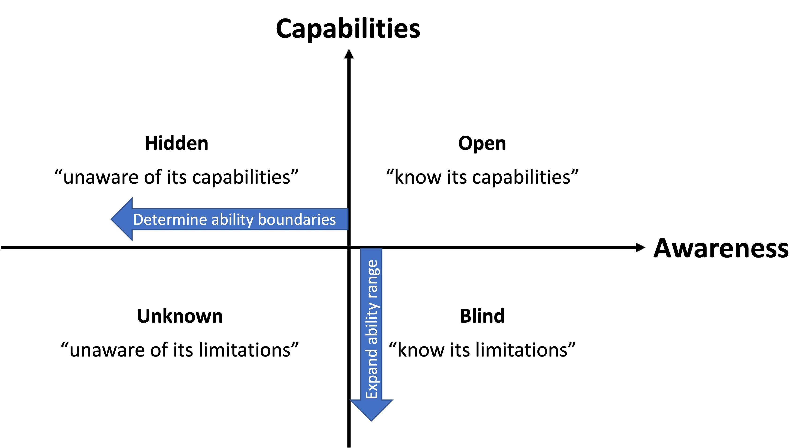

AI chain - a Flash in the Pan?
AI platformization - the transformative impact on software landscape
Awareness-cpabilities coordinator (Sang and Yu 2023)
As the capabilities of models continue to improve, will we soon no longer need AI chain technology, especially considering the impressive abilities of recent autonomous agent frameworks (such as AutoGPT)?
In the recent article ChatGPT: A Glimpse into AI’s Future, Sang and Yu project the AI's awareness and capabilities in a Johari window, which consists of four quadrants: open, blind, hidden, and unknown. As the capabilities of models and self-awareness improve, there will certainly be more abilities absorbed into the open quadrant. We believe this will result in a left-shift in worker-AI interaction modes. Prompts would be less sensitive to writing variations. For a task that previously required a higher-level interaction mode, it would now be completed with a lower-level interaction mod. Or, tasks that previously required a complex AI chain could now be completed with a simpler AI chain. At the same time, some tasks that previous weaker models could not handle can be completed with AI chains and stronger models.
However, we do not think this left-shifting means AI chain concepts and methods will become irrelevant as the model capabilities scale up. No matter how much the capabilities of models improve, there will always be hidden, blind, and unknown quadrants. AI chain is a fundamental strategy for determining ability boundaries between the open and hidden quadrants and expanding ability range between the open and blind quadrants, rather than a specific AI capability that could be absorbed by the large language models.
For example, through backward reasoning chain, LAMBADA more accurately determined the model's ability to solve complex reasoning tasks that were originally prone to errors. ReAct narrows blind spots by combining two fundamental abilities: reasoning and action, such as overcoming the common hallucination problem in Chain-of-Thoughts by searching Wikipedia through APIs. Reflection introduces self-reflection agent to ReAct, allowing for the exploration of roblem-solving abilities through trial and error.
While autonomous agents (such as AutoGPT) possess strong abilities in task planning, execution, and reflection, they cannot replace the concept and production tool of AI chain. First, they are themselves AI chains and their design and development require the support of AI chain production tools. Second, the continuous improvement of model capabilities has brought about the problem of "moving sand". In addition, the overall model improvement does not necessarily mean that all task abilities are improved. Some experiments have shown that new models may even perform worse in simple tasks. This "moving sand" problem brings a great deal of uncertainty and unpredictability to the behavior of autonomous agents, as these agents are not software production tools themselves. In contrast, the AI chain production tool we propose is built on a transparent software process and methodology, adhering to core values such as modular design, reusability, debuggability, and composability in software engineering. This enables the development of AI services to be more robust and predictable in the face of model "moving sand" problems.
In summary, we do not think AI chain and its production tool will become a flash in the pan even though LLMs demonstrate stronger and stronger capabilities in knowledge encoding, planning and evern writing code. This is because AI chain is a fundamental strategy for solving complex problems and a software engineering methdology on top of foundation models, rather than a specific AI capability which could be absorbed by LLMs. We believe stronger LLMs will make AI chain more powerful and AI chain production tool more efficient.
Stephen Wolfram wrote an insightful article "Will AIs Take All Our Jobs and End Human History - or Not?". We believe that this article provides a profound understanding of the relationship and collaboration between humans and AI, and is very useful for understanding and positioning the significance and role of AI chains.